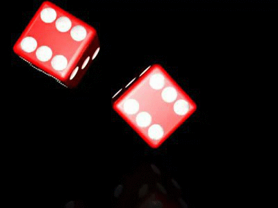

A deadly dice game that from your perspective gives you a \(97.2\%\) chance of surviving. But from your friend’s perspective, there’s a \(90\%\) chance that this game kills you. How does this make sense?
Rules of the Game
One person walks into a room and rolls a pair of dice. As long as they don’t roll double sixes, they walk out of the room alive and they win \(1\;\text{million}\) dollars. The game continues but this time \(10\) people walk into the room. and an appointed roller rolls the dice and if they don’t roll double sixes, all \(10\) people walk out of the room alive and with a million bucks each. Each round the number of players in the room increases by a factor of \(10\). So, \(1,10,100,1000, 10000\ldots\) Each participant only gets to play one round, and as soon as double sixes are rolled, the game is over forever. Also for this game, we have an unlimited supply of money and an infinity of people because we’re gonna get to \(10\) billion people by the \(11^{\text{th}}\) round and that’s more humans than we have on Earth. We also have a room that can hold infinite people.
Suspend Reality
When an unlucky roller finally rolls double sixes — also called “boxcars”, or “midnight” — everyone in that room dies instantly. Kind of a grim game, but a million bucks is life-altering money so you may determine that it’s worth the risk. After all, the odds of survival are in your favor. Six sides on each of two dice, marked with dots officially called pips, means there are a possible \(36\) combinations you can roll. That’s a \(\frac{1}{36}\) chance you’ll roll double sixes, which is only \(2.77\%\) repeating which will round up to \(2.8\%.\)

To put it in another way, there are \(35\) different combinations of surviving rolls and only \(1\) combination of death rolls. You might think that the game could be played for \(18\) rounds before there was a \(50/50\) chance of rolling double sixes because \(18\) rolls out of \(36\) possible combinations are \(50\%.\)
Well, no that’s actually not how we figure this out. In fact, you’d have to roll \(25\) times for a \(50\%\) chance of rolling double sixes.
Combinatorial Probability
The Problem
The easiest way to figure this out is actually to put the problem in terms of success instead of failure. So, there’s a \(\dfrac{35}{36}\) chance that our roll will let us survive. To calculate the probability of the game players all having a certain number of surviving rolls, we raise \(\bigg(\dfrac{35}{36}\bigg)^n\), where \(n\) is the number of rounds the game played. In \(5\) rounds, the chances that everyone survives are about \(87\% .\) \(10\) rounds and that drops to \(75\%.\) At \(n=18\) rounds, there’s still a \(60\%\) chance that no one has rolled double sixes. It isn’t until the \(25^{\text {th}}\) round that the odds shift against us.
Understandably Concerned
You could roll double sixes on the very first try. It’s not very likely. But each player is only playing one round, and we know that \(\dfrac{1}{36}\) is about \(2.8\%.\) This means, to you, the player, you have a \(97.2\%\) of living and getting the money whether you’re on your own in the first round or in round \(9\) with \(99,999,999\) other people. But when your friend hears that the game has finished and you were one of the players, he knows there’s about \(90\%\) chance you’re no longer in the mortal realm and he’s understandably concerned. After all, he is your best friend. The reason he’s concerned is very simple. Despite a \(2.8\%\) risk of a dice-rolling fatality, there’s about a \(90\%\) chance that you were one of the unfortunate, recently perished, losers. The danger is a matter of perspective. You know you have got over a \(97\%\) chance of surviving your round and getting paid. Your risk of death by double sixes is low. But poor, sad your friend realizes that because of each round’s escalation of players, the final group that rolled double sixes and succumbed to the deadly rules of the game, makes up almost \(90\%\) of all those who played. So, if you participated, you were likely in that group. To your best friend, there’s only a \(10\%\) chance you survived.
Conclusion
Your truth is that your chance of surviving is extremely high. Your friend’s truth is that the chance of you dead is nearly \(9\) out of \(10\). In the double sixes death game, reality doesn’t change \(-\) but a person’s perspective can flip that probability on its pips.
References
“Why we gamble like monkeys”. BBC.com. 2015-01-02.
Oppenheimer, D.M., & Monin, B. (2009). The retrospective gambler’s fallacy: Unlikely events, constructing the past, and multiple universes. Judgment and Decision Making, vol. 4, no. 5, pp. 326-334.
Ayton, P.; Fischer, I. (2004). “The hot-hand fallacy and the gambler’s fallacy: Two faces of subjective randomness?”. Memory and Cognition. 32 (8): 13691378. doi:10.3758/bf03206327. PMID 15900930.
Burns, Bruce D.; Corpus, Bryan (2004). “Randomness and inductions from streaks:”Gambler’s fallacy” versus “hot hand””. Psychonomic Bulletin & Review. 11 (1): 179184. doi:10.3758/BF03206480. ISSN 1069-9384. PMID 15117006